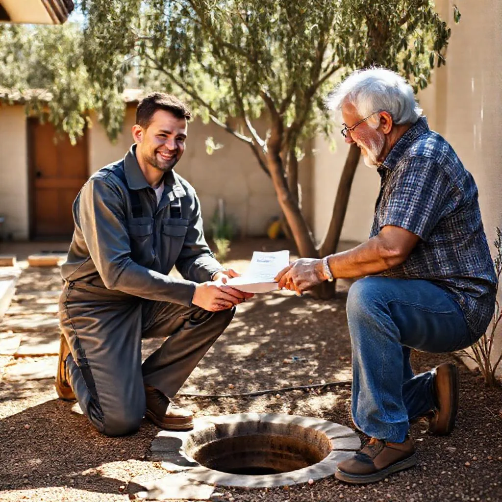
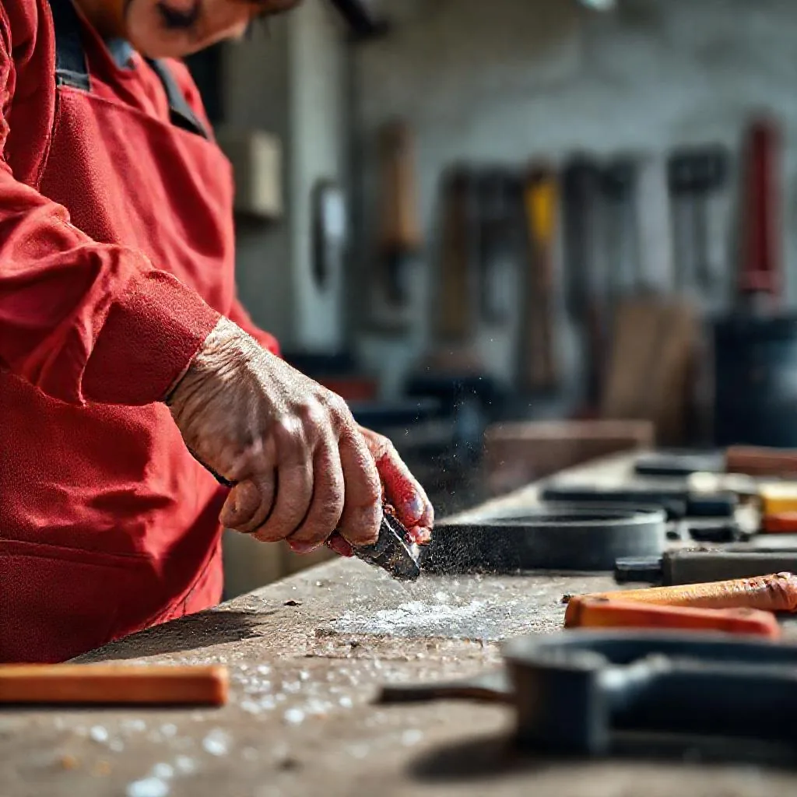

Urgencias 24h
Desatascos urgentes 24h
Atendemos urgencias a cualquier hora en Dos Hermanas y Sevilla. Sin esperas, sin obras innecesarias. Llegamos en menos de 60 minutos.
Ver servicioSolucionamos atascos urgentes en tuberías, arquetas y redes de saneamiento. Llegamos en menos de 60 minutos. Precio cerrado antes de empezar.
Soluciones profesionales para cada situación en Dos Hermanas y toda la provincia de Sevilla.
Atendemos urgencias a cualquier hora en Dos Hermanas y Sevilla. Sin esperas, sin obras innecesarias. Llegamos en menos de 60 minutos.
Ver servicioDesobstruimos y limpiamos arquetas con maquinaria específica de alta presión. Eliminamos malos olores y prevenimos rebrotes.
Ver servicioLocalizamos roturas con cámaras CCTV y reparamos sin romper suelos ni paredes. Trabajamos en toda Dos Hermanas y Sevilla.
Ver servicioIntroducimos una cámara en la tubería para ver exactamente dónde está el problema. Sin abrir nada innecesariamente.
Ver servicioVaciado, limpieza y mantenimiento de fosas sépticas y pozos negros en Dos Hermanas, Utrera y alrededores.
Ver servicioMás de 2.000 urgencias resueltas en Sevilla. Los clientes confían en nosotros y vuelven a llamar.

Tenemos equipo propio en Dos Hermanas. No somos una central de llamadas. Llegamos rápido porque estamos cerca.
Nunca encontrarás una factura sorpresa. Te damos el precio total antes de tocar nada. Desde 90€ en desatascos simples.
Si el problema reaparece en 3 meses, volvemos sin coste. Firmamos la garantía antes de irnos.
Usamos cámaras de inspección y equipos de hidropresión. Solucionamos sin romper suelos cuando es posible.

Proceso claro y transparente desde la primera llamada hasta la garantía final.
Te cogemos el teléfono al momento. Te damos el precio antes de salir. Sin sorpresas.
Salimos de inmediato desde Dos Hermanas. Normalmente estamos antes de una hora.
Inspeccionamos con cámara si hace falta y aplicamos la solución definitiva.
Antes de irnos firmamos la garantía de 3 meses. Si vuelve, volvemos gratis.
Cubrimos Dos Hermanas completa y toda la comarca de Sevilla con el mismo tiempo de respuesta.
"Los llame a las 2 de la mañana por una arqueta desbordada. En 45 minutos estaban en casa. Lo resolvieron en una hora y el precio fue exactamente lo que me dijeron por teléfono. Los mejores de Sevilla sin duda."
"Profesionalidad y atención excelente. Muy puntuales, trabajaron de forma limpia y ordenada. Usaron cámara para ver el problema exacto antes de actuar. Nada que ver con otras empresas que te dicen un precio y luego cobran el doble."
"Rápidos, limpios y honestos. Vinieron el mismo día, solucionaron el atasco de la comunidad en 2 horas y dejaron todo recogido. El precio fue razonable. Muy recomendables para comunidades de propietarios."
Sí, atendemos urgencias las 24 horas, los 365 días del año en Dos Hermanas y toda la provincia de Sevilla. Llamanos al 605 415 050 y en menos de 60 minutos estamos contigo.
Los desatascos simples con maquinaria hidrojet empiezan desde 90€. El precio exacto depende del tipo de atasco y acceso. Siempre te damos el precio cerrado antes de empezar, sin coste de desplazamiento.
Sí. Usamos maquinaria de alta presión y cámaras de inspección CCTV. En la mayoría de casos resolvemos el problema sin necesidad de abrir el suelo ni hacer obras.
Claro. Hacemos desatascos en comunidades, naves industriales y locales comerciales en Dos Hermanas y Sevilla. Tenemos tarifas de mantenimiento preventivo para comunidades.
Sí. Todos nuestros trabajos incluyen garantía por escrito de 3 meses. Si el problema reaparece en ese plazo, volvemos sin coste adicional.
Sí. Localizamos roturas y fugas con cámara CCTV y las reparamos. En muchos casos usamos técnicas sin zanja que evitan el destrozo y el coste de obras.
Sí. Además de Dos Hermanas, cubrimos Utrera, Los Palacios y Villafranca, Alcalá de Guadaíra, Montequinto, Olivar de Quintos y toda la comarca de Sevilla.
Te llamamos en menos de 5 minutos y te damos precio sin compromiso.
También por cualquiera de estas vías: